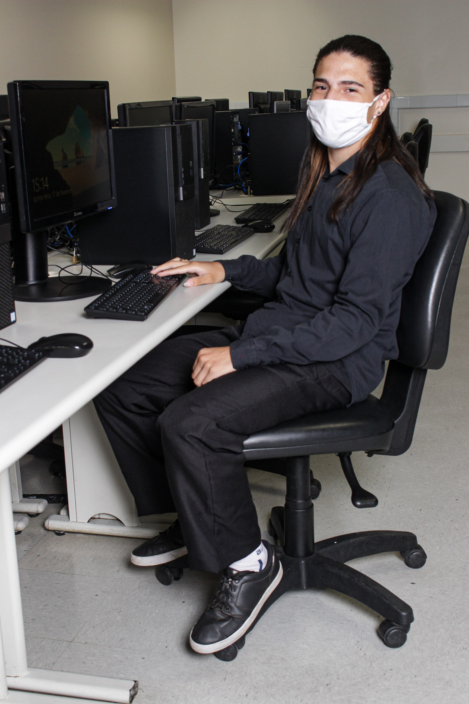

Curriculo
joão Vitor Da Silva Souza
- Brasileiro, Solteiro, 19 Anos.
- Jardim Pedra Branca. São Paulo - SP.
- CEP:08490500
- Celular:(11)982962392
- E-mail:joaovitorssouzap@gmail.com
- Linkedin: linkedin.com/in/joao-vitor-da-silva-souza
Educação
- Ensino Fundamental Completo - E.M.E.F Saturnino Pereira
Inicio: 02/2009 - Término: 12/2016.
- Ensino Médio Completo. E.E.Belize.
Inicio: 02/2017 - Término: 12/2019
-
Curso Técnico De T.I (Tecnologia da informação) - Senac
Inicio: 04/2021 - Término: 11/2022
-
Competências Desenvolvidas:
Montagem de Cabos de rede UTP
Configuração e Instalação básica de roteadores wi-fi
Instalção de Sistemas Operacionais
Limpeza Preventiva
Excel Básico
Indentificação de problema com o hardware e solução
Montagem e Desmontagem de computadores
Cabeamento estruturado
Gerenciamento de usuários, pastas e arquivos na rede
Cursos Complementares
- Fundação Bradesco - Escola Virtual. Completo (2020)
- Fundamentos de T.I: Hardware e Software.
Carga horária de: 15 horas.